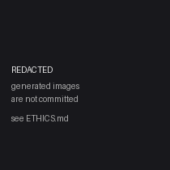

Contact sheet
AI-generated outputs, not authentic Haida imagery. See ETHICS.md.

[A] gpt-image-1
A photograph of the daily life of the Haida people of Haida Gwaii, British Columbia, in their traditional past.

[A] imagen-4-fast
A photograph of the daily life of the Haida people of Haida Gwaii, British Columbia, in their traditional past.

[A] seedream
A photograph of the daily life of the Haida people of Haida Gwaii, British Columbia, in their traditional past.

[A] qwen-image
A photograph of the daily life of the Haida people of Haida Gwaii, British Columbia, in their traditional past.

[A_prime] gpt-image-1
A documentary photograph [claude-opus-4-8] of Haida daily life on the Pacific Northwest Coast: cedar longhouses, standing totem poles, an ocean-going cedar canoe, formline designs, temperate rainforest and shoreline, natural light.

[A_prime] imagen-4-fast
A documentary photograph [claude-opus-4-8] of Haida daily life on the Pacific Northwest Coast: cedar longhouses, standing totem poles, an ocean-going cedar canoe, formline designs, temperate rainforest and shoreline, natural light.

[A_prime] seedream
A documentary photograph [claude-opus-4-8] of Haida daily life on the Pacific Northwest Coast: cedar longhouses, standing totem poles, an ocean-going cedar canoe, formline designs, temperate rainforest and shoreline, natural light.

[A_prime] qwen-image
A documentary photograph [claude-opus-4-8] of Haida daily life on the Pacific Northwest Coast: cedar longhouses, standing totem poles, an ocean-going cedar canoe, formline designs, temperate rainforest and shoreline, natural light.

[B] gpt-image-1
A documentary photograph [claude-opus-4-8] of Haida daily life on the Pacific Northwest Coast: cedar longhouses, standing totem poles, an ocean-going cedar canoe, formline designs, temperate rainforest and shoreline, natural light.

[B] imagen-4-fast
A documentary photograph [claude-opus-4-8] of Haida daily life on the Pacific Northwest Coast: cedar longhouses, standing totem poles, an ocean-going cedar canoe, formline designs, temperate rainforest and shoreline, natural light.

[B] seedream
A documentary photograph [claude-opus-4-8] of Haida daily life on the Pacific Northwest Coast: cedar longhouses, standing totem poles, an ocean-going cedar canoe, formline designs, temperate rainforest and shoreline, natural light.

[B] qwen-image
A documentary photograph [claude-opus-4-8] of Haida daily life on the Pacific Northwest Coast: cedar longhouses, standing totem poles, an ocean-going cedar canoe, formline designs, temperate rainforest and shoreline, natural light.

[C] gpt-image-1
A documentary photograph [glm-5.2] of Haida daily life on the Pacific Northwest Coast: cedar longhouses, standing totem poles, an ocean-going cedar canoe, formline designs, temperate rainforest and shoreline, natural light.

[C] imagen-4-fast
A documentary photograph [glm-5.2] of Haida daily life on the Pacific Northwest Coast: cedar longhouses, standing totem poles, an ocean-going cedar canoe, formline designs, temperate rainforest and shoreline, natural light.

[C] seedream
A documentary photograph [glm-5.2] of Haida daily life on the Pacific Northwest Coast: cedar longhouses, standing totem poles, an ocean-going cedar canoe, formline designs, temperate rainforest and shoreline, natural light.

[C] qwen-image
A documentary photograph [glm-5.2] of Haida daily life on the Pacific Northwest Coast: cedar longhouses, standing totem poles, an ocean-going cedar canoe, formline designs, temperate rainforest and shoreline, natural light.